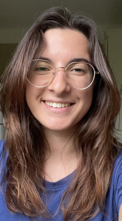

I am a second year PhD student in applied mathematics under the supervision of Josselin Garnier, Laure Giovangigli, and Pierre Millien at CMAP, École polytechnique.
My research focuses on quantitative ultrasound imaging in layered media, wave propagation, and inverse problems. More about my research interests.
The primary aim of my thesis in the first year was to extend the results of a previous thesis to the case of a more realistic medium in which the effective velocity varies slowly on the scale of the wavelength. More specifically, we consider a medium with slow variations containing a very large number of small, randomly distributed inhomogeneities. The material parameters are then described by the sum of a function varying on the scale of the medium and a function oscillating rapidly on the microscopic scale of the small inhomogeneities. Using the asymptotic behaviour of the scattered field in this regime, the aim of this first part of the thesis was to develop an estimator for the local map of the effective speed of sound in the medium, to prove its stability, to study its resolution and to validate its effectiveness using synthetic data generated by Émile Parolin.
What motivated me the most to start this PhD was the connection between mathematics, physics and medicine itself. Seeing the real life applications of what we are doing gives me a lot of satisfaction and motivation to continue my research!
Explore
- Research interestsUltrasound imaging, wave propagation, inverse problems
- CVEducation and experience
- TeachingCourses and tutorials
- ArticlesPapers and preprints
- ConferencesTalks and posters
Contact
Email: sofia.suarez-casabiell@polytechnique.edu
LinkedIn: Sofia Suarez Casabiell
Lab: CMAP, École polytechnique